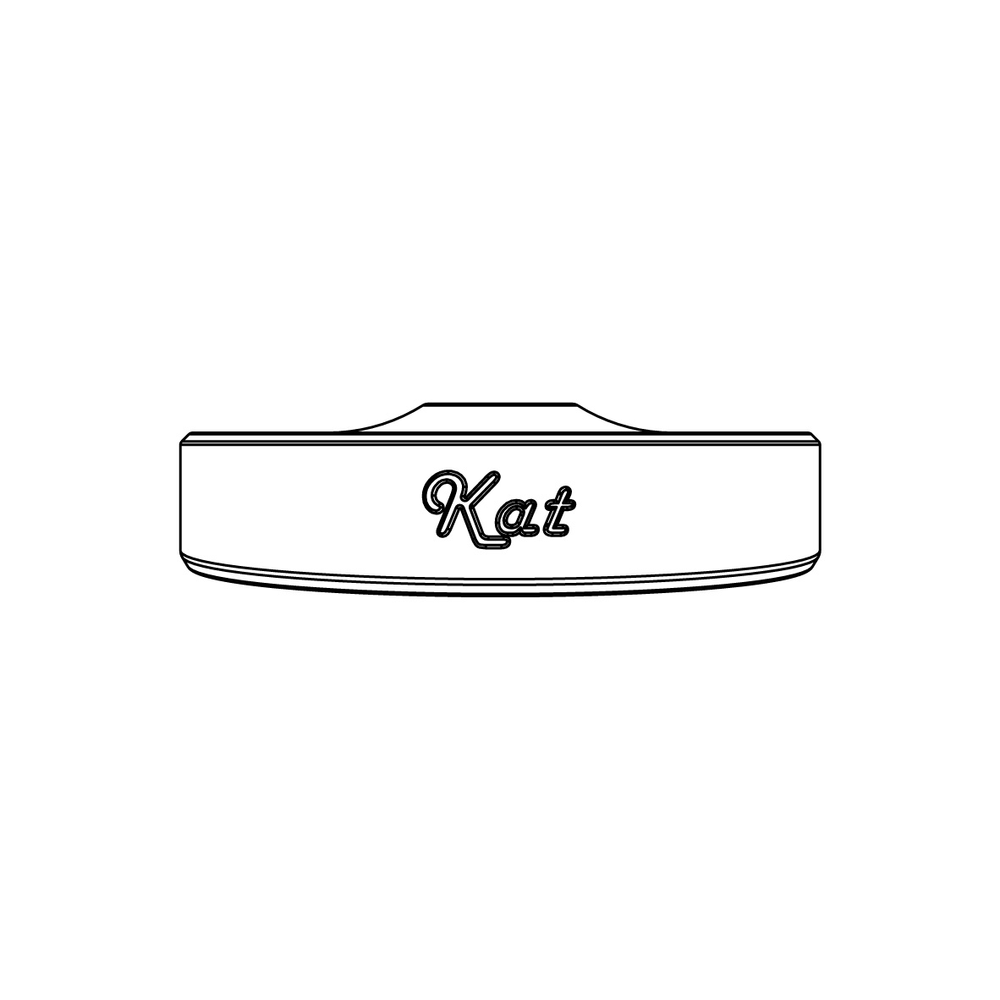

it's better to be safe than sorry
מכסה סיליקון רפואי שמתלבש על כוסות לונג (Highball, קוטר כ־65–75 מ"מ) וסוגר אותן פיזית. מגן מפני החדרת חומרים זרים, שומר על המשקה שלך – ורק שלך – במועדונים, ברים ומסיבות.

במועדונים, ברים ומסיבות — המשקה נשאר על הדלפק, על השולחן, או בידיים של מישהו אחר לרגע. חוסר ודאות קטן יכול להפוך את הערב למשהו שלא תכננתם.
מכסה סיליקון רפואי שמתלבש על כוס הלונג, נסגר באטימה, ומאפשר לשתות דרך קשית. המשקה שלך נשאר שלך — ואתם חוזרים לרקוד בראש שקט.
התוצאה: שקט נפשי בבילוי, בלי לוותר על הכיף. It’s better to be safe than sorry.
Kat הוא מכסה סיליקון אישי שנועד להעניק שקט נפשי בבילוי. הוא מתלבש על הכוס ברגע, אטום ועמיד, ומאפשר לשתות דרך פתח ייעודי לקשית – בלי לוותר על הביטחון.
מחסום פיזי שמונע החדרת חומרים למשקה. שתה בביטחון במועדונים, ברים ומסיבות.
עשוי מסיליקון Medical Grade. עומד בדרישות FDA 21 CFR 177.2600 למגע עם מזון ומשקאות (לפי דוח SGS). בטוח לשימוש חוזר.
התקנה והסרה תוך שניות. קומפקטי, מתקפל ונכנס בקלות לכל כיס או תיק.
תוכנן לסביבת מועדונים וברים – כוסות לונג נפוצות, אטימה חזקה, שימוש חוזר.
מגן גם מפני לכלוך, אבק וחרקים. שומר על המשקה נקי וטרי לאורך כל הערב.
מלאו את כוס הלונג במשקה המועדף עליכם.
הניחו את מכסה הסיליקון על הפתח והדקו בעדינות עד לאטימה מלאה.
השחילו קשית בפתח הייעודי – ותיהנו מערב בראש שקט.
השליחות שלנו ב־Kat היא לשנות את כללי המשחק בחיי הלילה והפנאי. אנחנו כאן כדי לוודא שהמשקה שלך נשאר רק שלך, ושתוכלו לרקוד, לדבר ולזוז בכיף – בלי הצורך להשגיח על הכוס ללא הפסקה.
אנחנו מאמינים שבילוי טוב מתחיל בביטחון אישי. לכן Kat מחזירה לכם את השליטה לידיים, מתוך אחריות חברתית ותחושת מוגנות מלאה.
It's better to be safe than sorry
נבדק במעבדה · מאושר למגע עם מזון ומשקאות · שקיפות מלאה ללקוחות סיטונאיים
US FDA 21 CFR 177.2600
Total Extractives – Pass
(SGS Test Report)
סיליקון בדרגה רפואית
בטוח למגע עם משקאות
ולשימוש חוזר
בדיקה עצמאית במעבדה
תקן בינלאומי מוכר
מיועד למגע עם מזון
ומשקאות – קרים ופושרים
כרגע מותאם לכוסות לונג (Highball) בקוטר כ־65–75 מ"מ – הכוסות הנפוצות ביותר בברים. הסיליקון האלסטי נמתח ומספק אטימה חזקה.
כן. שטיפה במים וסבון (או מדיח) והוא מוכן לשימוש חוזר. מתקפל בקלות ונכנס לכל כיס.
בהחלט. הדפסת לוגו, משפט או עיצוב – פתרון מצוין למועדונים, אירועים ועסקים. הזמנות סיטונאיות מדף ההזמנות.
לא. Kat הוא אמצעי עזר משלים בלבד. תמיד כדאי לשמור על המשקה בטווח הראייה. ראו גם את דף הגבלת אחריות.
גופים וארגונים שעובדים יחד איתנו לקידום בטיחות ובילוי אחראי
רוצים להופיע כאן? צרו קשר
הזמנות סיטונאיות · מדיניות החברה · הגבלת אחריות משפטית
או צרו קשר ישירות עם הצוות